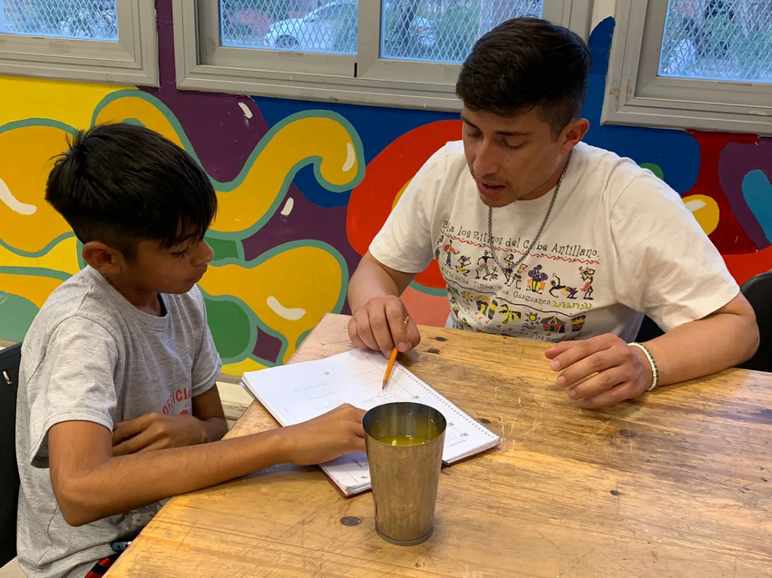
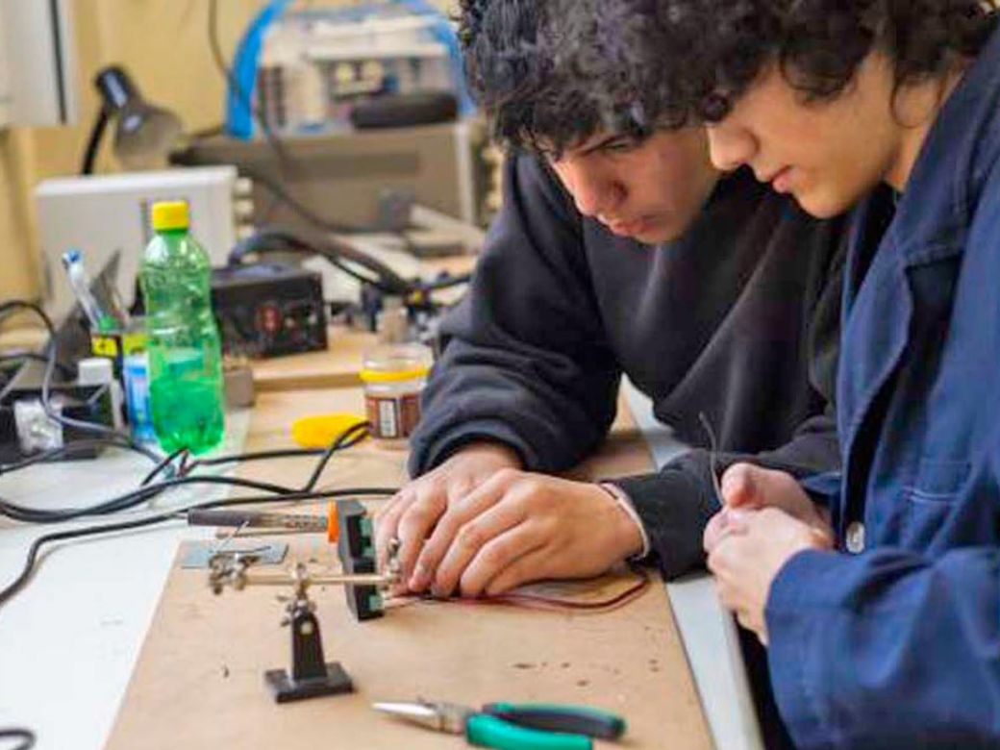

Acompañamiento escolar
Tutorías, apoyo con tareas, técnicas de estudio y preparación para evaluaciones.
En Cuadernos Llenos trabajamos junto a niños, niñas y adolescentes para que puedan sostener su trayectoria escolar, fortalecer sus aprendizajes y recuperar la confianza en sus propias capacidades.
Sabemos que muchas dificultades van más allá del aula: no siempre hay un espacio tranquilo para estudiar, acceso a internet, materiales escolares o alguien disponible para explicar una tarea. Con el tiempo, esas barreras pueden transformarse en frustración, rezago escolar o abandono.
Por eso creamos espacios gratuitos donde aprender sea posible, acompañado y compartido.

Tutorías, apoyo con tareas, técnicas de estudio y preparación para evaluaciones.
Lugares de confianza donde cada estudiante puede preguntar, aprender y crecer a su propio ritmo.
Movilizamos recursos, materiales y voluntades para que más chicos tengan lo que necesitan para seguir aprendiendo.

Jóvenes que acompañan a otros jóvenes para que estudiar sea más cercano, posible y compartido.
Tutorías, grupos de estudio y apoyo entre pares para resolver tareas, preparar evaluaciones y recuperar la confianza para aprender.
Conocé más →
Acompañamos a jóvenes para que terminar la escuela sea el comienzo de un futuro posible.
Apoyo para aprobar materias, organizar el estudio, preparar exámenes, armar el primer currículum y proyectar próximos pasos.
Conocé más →
Acompañamos a estudiantes técnicos con herramientas, materiales y apoyo para aprender haciendo.
Recursos para proyectos, prácticas y trabajos escolares, junto con orientación de estudiantes, egresados y voluntarios especializados.
Conocé más →
Porque a veces una oportunidad empieza con algo tan simple como un cuaderno.
Reunimos y distribuimos útiles, mochilas, libros y materiales escolares para que la falta de recursos no interrumpa el aprendizaje.
Conocé más →